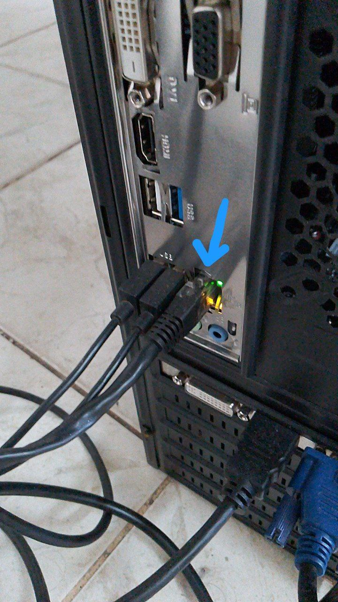
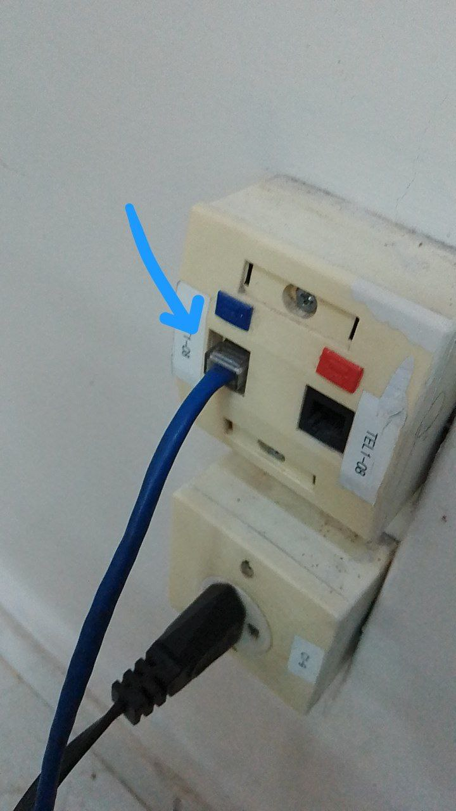

FAQ CENTRAL DE DÚVIDAS TI
INTERNET
1. Verifique se o cabo de rede está devidamente encaixado na CPU e no ponto
de rede na parede.


2. Verifique o IP

Se estiver 172... a rede está conectada, o problema será no site / sistema que está tentando acessar ou será necessário realizar o login na internet clicando aqui.
Se estiver 169... ou 127... entre em contato com o suporte clicando aqui.
1. Para criar o acesso ao intranet preencha o formulário clicando aqui
2. Envie o formulário para o e-mail
seplan-info@parademinas.mg.gov.br ou deixe o arquivo na Informática da Prefeitura.
1. Verifique se toda a unidade está sem internet, se sim clique aqui, se for somente um computador realize o passo a passo do tópico "Minha internet caiu".